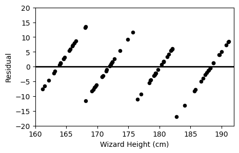
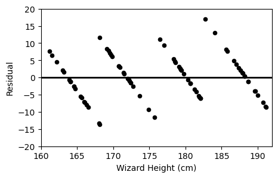
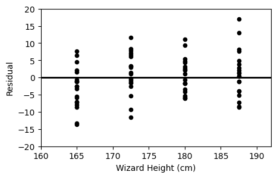

← return to practice.dsc10.com
Instructor(s): Janine Tiefenbruck
This exam was administered in-person. Students were allowed one page of double-sided handwritten notes. No calculators were allowed. Students had 3 hours to take this exam.
While browsing the library, Hermione stumbles upon an old book containing game logs for all Quidditch matches played at Hogwarts in the 18th century. Quidditch is a sport played between two houses. It features three types of balls:
Quaffle: Worth 10 points when used to score a goal.
Bludger: Does not contribute points. Instead, used to distract the other team.
Snitch: Worth 150 points when caught. This immediately ends the game.
A game log is a list of actions that occurred during a Quidditch
match. Each element of a game log is a two-letter string where the first
letter represents the house that performed the action ("G"
for Gryffindor, , "H" for Hufflepuff, "R" for
Ravenclaw, "S" for Slytherin) and the second letter
indicates the type of Quidditch ball used in the action
("Q" for Quaffle, "B" for Bludger,
"S" for Snitch). For example, "RQ" in a game
log represents Ravenclaw scoring with the Quaffle to earn 10 points.
Hermione writes a function, logwarts, to calculate the
final score of a Quidditch match based on the actions in the game log.
The inputs are a game log (a list, as described above) and the full
names of the two houses competing. The output is a list of length 4
containing the names of the teams and their corresponding scores.
Example behavior is given below.
>>> logwarts(["RQ", "GQ", "RB", "GS"], "Gryffindor", "Ravenclaw")
["Gryffindor", 160, "Ravenclaw", 10]
>>> logwarts(["HB", "HQ", "HQ", "SS"], "Hufflepuff", "Slytherin")
["Hufflepuff", 20, "Slytherin", 150]Fill in the blanks in the logwarts function below. Note
that some of your answers are used in more than one
place in the code.
def logwarts(game_log, team1, team2):
score1 = __(a)__
score2 = __(a)__
for action in game_log:
house = __(b)__
ball = __(c)__
if __(d)__:
__(e)__:
score1 = score1 + 10
__(f)__:
score1 = score1 + 150
else:
__(e)__:
score2 = score2 + 10
__(f)__:
score2 = score2 + 150
return [team1, score1, team2, score2]What goes in blank (a)?
Answer: 0
First inspect the function parameters. With the example
logwarts(["RQ", "GQ", "RB", "GS"], "Gryffindor", "Ravenclaw"),
we observe game_log will be a list of strings, and
team1 and team2 will be the full name of the
respective competing houses. We can infer from the given structure that
our code will
Initialize two scores variables for the two houses,
Run a for loop through all the entries in the list, update score based on given conditions,
Return the scores calculated by the loop.
To set up score_1 and score_2 so we can
accumulate them in the for loop, we first set both equal to 0. So blank
(a) will be 0.
The average score on this problem was 89%.
What goes in blank (b)?
Answer: action[0]
We observe the for loop iterates over the list of actions, where each
action is a two letter string in the
game_log array. Recall question statement- “Each element of
a game log is a two-letter string where the first letter represents the
house that performed the action”. Therefore, to get the house, we will
want to get the first letter of each action string. This is accessed by
action[0].
Note: A common mistake here is using action.split()[0].
Recall
what split() does - it takes in a string, splits it
according to the delimiter given (if not given, it separates by blank
space), and returns a list of separated strings. This
means that action.split()[0] will actually return itself.
Example: if action is "RQ",
action.split() will split "RQ" by blank space,
in this case, there are none; so it will return the one-element list
["RQ"]. Accessing the zero-th index of this list by
action.split()[0] gives us "RQ" back, instead
of what we actually want ("R").
The average score on this problem was 61%.
What goes in blank (c)?
Answer: action[1]
Following the same logic as blank (b), we get the type of ball used
in the action by accessing the second character of the string, which is
action[1].
The average score on this problem was 62%.
What goes in blank (d)?
Answer: house == team1[0]
Now enter the fun part: to figure out the correct conditions of the if-statments, we must observe the code inside our conditional blocks carefully.
Recall question statement:
For each entry of the game log, the house is represented by the first letter. “G” for Griffindor, “H” for Hufflepuff, “R” for Ravenclaw, “S” for Slytherin.
Quaffle (“Q”) gets 10 points,
Snitch (“S”) gets 150 points,
Bludger (“B”) gets no point.
score1 is the score of the first team, and
score2 is the score of the second.
We have two conditions to take care of, the house and the type of
ball. How on earth do we know which one is nested and which one is on
the outside? Observe in the first big if statment, we are only updating
score1. This means this block takes care of the score of
the first house. Therefore, blank (d) should set the condition for the
first house.
Now careful! team1 and team2 are given as
full house names. We can match the house variable by
getting the first letter of the each team string (e.g. if
team1 is Griffindor, we will get “G” to match with “G”). We
want to match house with team1[0], so our
final answer is house == team1[0]. Since there are only two
houses here, the following else block will take care of
calculating score for the second house using the same scoring scheme as
we do for the first house.
The average score on this problem was 74%.
What goes in blank (e)?
Answer: if ball == "Q"
After gracefully handling the outer conditional statement, the rest
is simple. We now simply condition the scores. Here, we see score1
increments by 10, so we know this is accounting for a Quaffle. Recall
ball variable represents the type of ball we have. In this
case, we use if ball == "Q" to filter for Quaffles.
The average score on this problem was 69%.
What goes in blank (f)?
Answer: elif ball == "S" or
if ball == "S"
Using the same logic as blank (e), since the score is incremented by
150 here, we know this is a snitch. Using elif ball == "S"
or if ball == "S" will serve the purpose. We do not need to
worry about bludgers, since those do not add to the score.
The average score on this problem was 64%.
The Death Eaters are a powerful group of dark wizards who oppose
Harry Potter and his allies. Each Death Eater receives a unique
identification number based on their order of initiation, ranging from
1 to N, where N represents the
total number of Death Eaters.
Your task is to estimate the value of N so you can
understand how many enemies you face. You have a random sample of
identification numbers in a DataFrame named death_eaters
containing a single column called "ID".
Which of the options below would be an appropriate estimate for the total number of Death Eaters? Select all that apply.
death_eaters.get("ID").max()
death_eaters.get("ID").sum()
death_eaters.groupby("ID").count()
int(death_eaters.get("ID").mean() * 2)
death_eaters.shape[0]
None of the above.
Each box that you selected in part (a) is an example of what?
a distribution
a statistic
a parameter
a resample
Suppose you have access to a function called estimate,
which takes in a Series of Death Eater ID numbers and returns an
estimate for N. Fill in the blanks below to do the
following:
Create an array named boot_estimates, containing
10,000 of these bootstrapped estimates of N, based on the
data in death_eaters.
Set left_72 to the left endpoint of
a 72% confidence interval for N.
boot_estimates = np.array([])
for i in np.arange(10000):
boot_estimates = np.append(boot_estimates, __(a)__)
left_72 = __(b)__
When new students arrive at Hogwarts, they get assigned to one of the four houses (Gryffindor, Hufflepuff, Ravenclaw, Slytherin) by a magical Sorting Hat.
Throughout this problem, we’ll assume that the Sorting Hat assigns students to houses uniformly at random, meaning that each student has an independent 25% chance of winding up in each of the four houses.
For all parts, give your answer as an unsimplified mathematical expression.
There are seven siblings in the Weasley family: Bill, Charlie, Percy, Fred, George, Ron, and Ginny. What is the probability that all seven of them are assigned to Gryffindor?
What is the probability that Fred and George Weasley are assigned to the same house?
What is the probability that none of the seven Weasley siblings are assigned to Slytherin?
Suppose you are told that none of the seven Weasley siblings is assigned to Slytherin. Based on this information, what is the probability that at least one of the siblings is assigned to Gryffindor?
Beneath Gringotts Wizarding Bank, enchanted mine carts transport wizards through a complex underground railway on the way to their bank vault.
During one section of the journey to Harry’s vault, the track follows the shape of a normal curve, with a peak at x = 50 and a standard deviation of 20.
A ferocious dragon, who lives under this section of the railway, is equally likely to be located anywhere within this region. What is the probability that the dragon is located in a position with x \leq 10 or x \geq 80? Select all that apply.
1 - (scipy.stats.norm.cdf(1.5) - scipy.stats.norm.cdf(-2))
2 * scipy.stats.norm.cdf(1.75)
scipy.stats.norm.cdf(-2) + scipy.stats.norm.cdf(-1.5)
0.95
None of the above.
Harry wants to know where, in this section of the track, the cart’s height is changing the fastest. He knows from his earlier public school education that the height changes the fastest at the inflection points of a normal distribution. Where are the inflection points in this section of the track?
x = 50
x = 20 and x = 80
x = 30 and x = 70
x = 0 and x = 100
Next, consider a different region of the track, where the shape follows some arbitrary distribution with mean 130 and standard deviation 30. We don’t have any information about the shape of the distribution, so it is not necessarily normal.
What is the minimum proportion of area under this section of the track within the range 100 \leq x \leq 190?
0.77
0.55
0.38
0.00
Among Hogwarts students, Chocolate Frogs are a popular enchanted treat. Chocolate Frogs are individually packaged, and every Chocolate Frog comes with a collectible card of a famous wizard (ex.”Albus Dumbledore"). There are 80 unique cards, and each package contains one card selected uniformly at random from these 80.
Neville would love to get a complete collection with all 80 cards, and he wants to know how many Chocolate Frogs he should expect to buy to make this happen.
Suppose we have access to a function called
frog_experiment that takes no inputs and simulates the act
of buying Chocolate Frogs until a complete collection of cards is
obtained. The function returns the number of Chocolate Frogs that were
purchased. Fill in the blanks below to run 10,000 simulations and set
avg_frog_count to the average number of Chocolate Frogs
purchased across these experiments.
frog_counts = np.array([])
for i in np.arange(10000):
frog_counts = np.append(__(a)__)
avg_frog_count = __(b)__Realistically, Neville can only afford to buy 300 Chocolate Frog
cards. Using the simulated data in frog_counts, write a
Python expression that evaluates to an approximation of the probability
that Neville will be able to complete his collection.
True or False: The Central Limit Theorem states that
the data in frog_counts is roughly normally
distributed.
True
False
Professor Severus Snape is rumored to display favoritism toward certain students. Specifically, some believe that he awards more house points to students from wizarding families (those with at least one wizarding parent) than students from muggle families (those without wizarding parents).
To investigate this claim, you will perform a permutation test with these hypotheses:
Null Hypothesis: Snape awards house points independently of a student’s family background (wizarding family vs. muggle family). Any observed difference is due to chance.
Alternative Hypothesis: Snape awards more house points to students from wizarding families, on average.
The DataFrame snape is indexed by "Student"
and contains information on each student’s family background
("Family") and the number of house points awarded by Snape
("Points"). The first few rows of snape are
shown below.
Which of the following is the most appropriate test statistic for our permutation test?
The total number of house points awarded to students from wizarding families minus the total number of house points awarded to students from muggle families.
The mean number of house points awarded to students from wizarding families minus the mean number of house points awarded to students from muggle families.
The number of students from wizarding families minus the number of students from muggle families.
The absolute difference between the mean number of house points awarded to students from wizarding families and the mean number of house points awarded to students from muggle families.
Fill in the blanks in the function one_stat, which
calculates one value of the test statistic you chose in part (a), based
on the data in df, which will have columns called
"Family" and "Points".
def one_stat(df):
grouped = df.groupby(__(a)__).__(b)__
return __(c)__Fill in the blanks in the function calculate_stats,
which calculates 1000 simulated values of the test statistic you chose
in part (a), under the assumptions of the null hypothesis. As before,
df will have columns called "Family" and
"Points".
def calculate_stats(df)
statistics = np.array([])
for i in np.arange(1000):
shuffled = df.assign(Points = __(d)__)
stat = one_stat(__(e)__)
statistics = __(f)__
return statisticsFill in the blanks to calculate the p-value of the permutation test,
based on the data in snape.
observed = __(g)__
simulated = __(h)__
p_value = (simulated __(i)__ observed).mean()Define mini_snape = snape.take(np.arange(3)) as shown
below.
Determine the value of the following expression.
len(calculate_stats(mini_snape))With mini_snape defined as above, there will be at most
three unique values in calculate_stats(mini_snape). What
are those three values? Put the smallest value on the left and
the largest on the right.
Professor Minerva McGonagall, head of Gryffindor, may also be awarding house points unfairly. For this question, we’ll assume that all four of the houses contain the same number of students, and we’ll investigate whether McGonagall awards points equally to all four houses.
Below is the distribution of points that Professor McGonagall awarded during the last academic year.
You want to test the following hypotheses:
Null Hypothesis: The distribution of points awarded by Professor McGonagall is uniform across all of the houses.
Alternative Hypothesis: The distribution of points awarded by Professor McGonagall is not uniform across all of the houses.
Which of the following test statistics is appropriate for this hypothesis test? Select all that apply.
The absolute difference between the number of points awarded to Gryffindor and the proposed proportion of points awarded to Gryffindor.
The difference between the number of points awarded to the house with the most points and the house with the least points.
The sum of the squared differences in proportions between
McGonagall’s distribution and [0.5, 0.5, 0.5, 0.5].
The sum of the differences in proportions between McGonagall’s
distribution and [0.25, 0.25, 0.25, 0.25].
The sum of the squared differences in proportions between
McGonagall’s distribution and [0.25, 0.25, 0.25, 0.25].
None of the above.
For the rest of this problem, we will use the following test statistic:
The sum of the absolute differences in proportions between
McGonagall’s distribution and
[0.25, 0.25, 0.25, 0.25].
Choose the correct way to implement the function
calculate_test_stat, which takes in two distributions as
arrays and returns the value of this test statistic.
def calculate_test_stat(dist_1, dist_2):
return _____ np.abs(sum(dist_1 - dist_2)).
abs(sum(dist_1 - dist_2)).
sum(np.abs(dist_1 - dist_2)).
sum(abs(dist_1 - dist_2)).
(10 pts) Fill in the blanks in the code below so that
simulated_ts is an array containing 10,000 simulated values
of the test statistic under the null. Note that your answer to blank
(c) is used in more than one place in the
code.
mc_gon = np.arange(__(a)__) # Careful: np.arange, not np.array!
null = np.array([0.25, 0.25, 0.25, 0.25])
observed_ts = calculate_test_stat(__(b)__)
simulated_ts = np.array([])
for i in np.arange(10000):
sim = np.random.multinomial(__(c)__, __(d)__) / __(c)__
one_simulated_ts = calculate_test_stat(__(e)__)
simulated_ts = np.append(simulated_ts, one_simulated_ts)Fill in the blank so that reject_null evaluates to
True if we reject the null hypothesis at the 0.05 significance level, and
False otherwise.
reject_null = __(f)__Your friend performs the same hypothesis test as you, but uses the total variation distance (TVD) as their test statistic instead of the one described in the problem. Which of the following statements is true?
Your friend’s simulated statistics will be larger than yours, because TVD accounts for the magnitude and direction of the differences in proportions.
Your friend’s simulated statistics will be larger than yours, but not because it accounts for the magnitude and direction of the differences in proportions.
Your friend’s simulated statistics will be smaller than yours, because TVD accounts for the magnitude and direction of the differences in proportions.
Your friend’s simulated statistics will be smaller than yours, but not because it accounts for the magnitude and direction of the differences in proportions.
There is no relationship between the statistic you used and the statistic your friend used (TVD).
Professor Filius Flitwick is conducting a study whose results will be used to help new Hogwarts students select appropriately sized broomsticks for their flying lessons. Professor Flitwick measures several wizards’ heights and broomstick lengths, both in centimeters. Since broomsticks can only be purchases in specific lengths, the scatterplot of broomstick length vs. height has a pattern of horizontal stripes:
If we group the wizards in Professor Flitwick’s research study by their broomstick length, and average the heights of the wizards in each group, we get the following results.
It turns out that the regression line that predicts broomstick length (y) based on wizard height (x) passes through the four points representing the means of each group. For example, the first row of the DataFrame above means that (165, 150) is a point on the regression line, as you can see in the scatterplot.
Based only on the fact that the regression line goes through these points, which of the following could represent the relationship between the standard deviation of broomstick length (y) and wizard height (x)? Select all that apply.
SD(y) = SD(x)
SD(y) = 4\cdot SD(x)
SD(y) = 2\cdot SD(x)
SD(y) = 5\cdot SD(x)
SD(y) = 3\cdot SD(x)
Now suppose you know that SD(y) = 3.5 \cdot SD(x). What is the correlation coefficient, r, between these variables? Give your answer as a simplified fraction.
Suppose we convert all wizard heights from centimeters to inches (1 inch = 2.54 cm). Which of the following will change? Select all that apply.
The standard deviation of wizard heights.
The proportion of wizard heights within three standard deviations of the mean.
The correlation between wizard height and broom length.
The slope of the regression line predicting broom length from wizard height.
The slope of the regression line predicting wizard height from broom length.
None of the above.
Suppose we convert all wizard heights and all broomstick lengths from centimeters to inches (1 inch = 2.54 cm). Which of the following will change, as compared to the original data when both variables were measured in centimeters? Select all that apply.
The correlation between wizard height and broom length.
The slope of the regression line predicting broom length from wizard height.
The slope of the regression line predicting wizard height from broom length.
None of the above.
Professor Flitwick calculates the root mean square error (RMSE) for his regression line to be 36 cm. What does this RMSE value suggest about the accuracy of the regression line’s broomstick length predictions?
The predictions are, on average, 6 cm off from the actual broomstick lengths.
The predictions are, on average, 36 cm off from the actual broomstick lengths.
The predictions are, on average, (36)^2 cm off from the actual broomstick lengths.
Every wizard’s broomstick length differs from the predicted length by 36 cm.
The predictions are more accurate for shorter wizards than taller wizards.
The RMSE does not tell us anything about prediction accuracy.
None of the above.
Which of the following plots is the residual plot for Professor Flitwick’s data?
Option A: 
Option B: 
Option C: 
The Triwizard Tournament is an international competition between three wizarding academies: Hogwarts, Durmstrang, and Beauxbatons.
In a Triwizard Tournament, wizards from each school compete in three dangerous magical challenges. If one school wins two or more challenges, that school is the tournament champion. Otherwise, there is no champion, since each school won a single challenge.
The DataFrame triwiz has a row for each challenge from
the first 20 Triwizard Tournaments. With 20 tournaments each having 3
challenges, triwiz has exactly 60 rows.
The first six rows are shown below.
The columns are:
"Year" (int): Triwizard Tournaments are held only
once every five years.
"Host" (str): Triwizard Tournaments are held at one
of the three participating schools on a rotating basis: Hogwarts,
Durmstrang, Beauxbatons, back to Hogwarts again, etc.
"Challenge" (int): Either 1,
2, or 3.
"Winner" (str): The school that won the
challenge.
(10 pts) Fill in the blanks below to create the DataFrame
champions, which is indexed by "Winner" and
has just one column, "Year", containing the number
of years in which each school was the tournament champion.
champions is shown in full below.
Note that the values in the "Year" column add up to 14,
not 20. That means there were 6 years in which there was a tie (for
example, 1299 was one such year).
grouped = triwiz.groupby(__(a)__).__(b)__.__(c)__
filtered = grouped[__(d)__]
champions = filtered.groupby(__(e)__).__(f)__.__(g)__How many rows are in the DataFrame that results from merging
triwiz with itself on "Year"? Give your answer
as an integer.
How many rows are in the DataFrame that results from merging
triwiz with itself on "Challenge"? Give your
answer as an integer.
How many rows are in the DataFrame that results from merging
triwiz with itself on "Host"? Select the
expression that evaluates to this number.
2\cdot 6^2 + 7^2
2\cdot 7^2 + 6^2
2\cdot 18^2 + 21^2
2\cdot 21^2 + 18^2
Bertie Bott’s Every Flavor Beans are a popular treat in the wizarding world. They are jellybean candies sold in boxes of 100 beans, containing a variety of flavors including chocolate, peppermint, spinach, liver, grass, earwax, and paper. Luna’s favorite flavor is bacon.
Luna wants to estimate the proportion of bacon-flavored beans produced at the Bertie Bott’s bean factory. She buys a box of Bertie Bott’s Every Flavor Beans and finds that 4 of the 100 beans inside are bacon-flavored. Using this sample, she decides to construct an 86\% CLT-based confidence interval for the proportion of bacon-flavored beans produced at the factory.
Let’s begin by solving a related problem that will help us in the later parts of this question. Consider the following fact:
For a sample of size 100 consisting of 0’s and 1’s, the maximum possible width of an 86\% CLT-based confidence interval is approximately 0.15.
Use this fact to find the value of z such that
scipy.stats.norm.cdf(z) evaluates to 0.07.
Give your answer as a number to one decimal place.
Suppose that Luna’s sample has a standard deviation of 0.2. What are the endpoints of her 86\% confidence interval? Give each endpoint as a number to two decimal places.
Hermione thinks she can do a better job of estimating the proportion of bacon-flavored beans, though she’ll need a bigger sample to do so. Hermione will collect a new sample and use it to construct another 86\% confidence interval for the same parameter.
Under the assumption that Hermione’s sample will have the same standard deviation as Luna’s sample, which was 0.2, how many boxes of Bertie Bott’s Every Flavor Beans must Hermione buy to guarantee that the width of her 86\% confidence interval is at most 0.012? Give your answer as an integer.
Remember: There are 100 beans in each box.